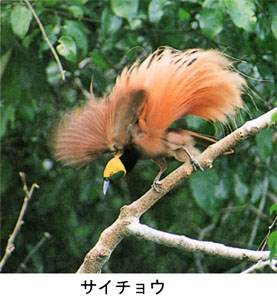

|
第１７ ユニオン・ジャック（英国の国旗）をぶんどる
 辺りの様子を偵察して見ようと考え屋外に出てみた。東の空には、すでに太陽が高く上っていた。空が青い！マダンの湾岸沿いには赤い屋根、青い屋根の民家が点在し、その美しい町並みに驚嘆した。今度はアンテナを確かめようと、昨夜寝た倉庫の屋根を見あげて吃驚りした。何と！屋上に、ユニオンジャックがへんぽんと翻っているではないか。これを見た途端に、生意気なやつ！と頭にきた。私は大声をだして 『坂田上等兵ッ。あの英国国旗を引きずり降ろせ！』と、命令した。 その後しばらくして坂田上等兵が、うやうやしく英国国旗を私に献上した。この時はさすがに嬉しかった。 『坂田上等兵、良くやったぞ』 と彼を褒めてやった。それにしても、梯子もないのに、あの高い屋根に、どうして上ったかと考え、彼の顔をしげしげと眺めたら、坂田上等兵は嬉しそうにニッコリ笑った。 約１メートルの大きさで、麻製の威厳がある立派な英国、国旗だった。東部ニユーギニア各地を３年有余か月にわたり駆け巡るあいだ、ユニオン ジャックを持ち歩き自慢だった。が、敗戦を迎え、これはヤバイと考え、ジァングルの沼の中に英国国旗は投げ込んだ。一方、終戦後もイギリス軍将校の双眼鏡を持っていた日本軍の将校が、どの様な経路で入手したかを厳しく詮議され、とうとう銃殺刑にされた、という話を聞いた。彼は戦争に負けたという現実を深刻に理解していなかったのであります。 それから私はラバウルと連絡が取れたことを報告するため、花輪支隊本部に報告に出かけた。途中まで来たとき午前八時頃になったら、戦爆連合の敵機の大編隊が来襲して、所かまわず爆弾を投下し機銃掃射してくる。ヤシ林の中で敵の空襲を受けた私は慌てて橋の下に飛び込んだ。敵機はしつこく何回も機銃掃射してくる。辺りには友軍の姿はなく、私一人だったので恐ろしかった。一時間ほどで空襲解除。ヤレヤレ助かった。橋の下で一時間も水の中に居たので、新品の皮長靴がブヨブヨにふやけてしまい、駄目になってしまった。橋桁の下には、足の長い蜘蛛が沢山うごめいていて、誠に気持ちが悪かったが命には代えられないので、ジーット我慢した。二メートルほどの幅の狭い橋の下に隠れ、難を逃れた。戦場に来て初めて敵から攻撃を受け、いい体験になった。 一方そんな状況下で、道路構築隊の隊長は爆弾は当たらないと豪語し、家から外に出て避難しようとしなかったので、他の将校も避難しなかった。ところが、爆弾が家の近くに落下し、爆弾の炸裂した破片で、隊長以下将校五名が一時に戦死してしまうという悲劇が起きた。その後は、陸軍曹長が道路構築隊を指揮する事になった。わが軍通無線隊は幸い何の被害もなかった。激しい敵の空襲の中で、勇敢な歩兵部隊の兵士が、敵戦闘機と重機関銃で応戦していた。敵のアメリカ兵も勇敢だった。敵戦闘機がヤシの葉スレスレに来襲し、カタカタという音をたてながら機銃で、地上の我々を反復して銃撃して来る。悔しさが身にしみた。敵は戦闘機の風防窓を開け、パイロットが地上の我らを探しながら機銃掃射してくる。地上からは陸軍上等兵が敵機めがけて重機関銃を打ちまくる。空中と地上からと息を飲む壮絶な戦闘が暫く続いた。息のつまる戦闘場面だった。ところで、こんな近距離から敵の戦闘機を狙って重機関銃で射撃するのに、どうして？弾が敵機に当たらないのか、不思議だった。ヤシの木の下で、なんの防御もなく、来襲する敵機めがけて重機関銃を打ちまくる歩兵の陸軍上等兵の勇敢な行動を見ていると、彼の姿が英雄のように思はれた。 ……禅に「命を捨ててこそ、浮かぶ瀬もあれ」ということが脳裏をかすめた。…… 敵重爆撃機の大編隊は、今朝マダンに上陸したばかりの日本軍をさんざん爆撃したあと、今度は今朝我々をマダンに上陸させ、ラバウルに引き返した日本軍の輸送船団を狙って北方に向かって飛び去った。さりゆく敵爆撃機コンソリ・デーテッドの後ろ姿を暫く眺めていたが、私どもは船団の無事を神に祈った。 後で、船団は無事ラバウルについたことを知りホッと安心した。激しい空襲は約一時間程で終わった。そのあとは静かな自然に戻った。私は平常心に戻り、マダンの町並みを改めて眺めてみたら、何と美しい町であろう！と、感嘆した。今朝上陸したマダン湾の波は穏やかで、静かな朝を迎えていた。海は紺碧に輝き、海岸の近くにバナナが一本はえていて、黄色いバナナが枝もたわわに実のっていた。その傍らには赤い屋根の民家が一軒あったが、その風景はまさに一幅の絵画のようだった。 敵情を知るために、町の中を歩いてみた。最初に、銀行の中に入ってみた。イギリスのコインが床に散乱し、帳簿は引き出しからはみ出て、そこらぢゅうに散乱し、何かを慌てて探したらしく、めちやめちやに散らかっていた。敵は住民共々相当慌てて退散したらしい。堂々としたマダンのホテルでは、立派なグランドピアノがそのままに置いてある。冷蔵庫もあった。ホテルの裏庭にはテニスコートもある。シァワーもある。敵国民の文化的生活の高いのに驚いた。居留民は全員本国に引き上げて行ったのであろう。誰も居ないようだ。 この上陸作戦で、我が軍の受けた損害は 戦闘機一機撃墜された 高射砲三門使用不能 高射砲兵十六名戦死 野戦工兵将校五名戦死 巡洋艦一隻轟沈 その他 と、記憶している。 マダン上陸作戦参加部隊の名称 花輪支隊 広島師団歩兵連隊 二ケ大隊 飛行場設定隊 道路構築隊 軍通信隊山口無線小隊 以上 「マダン上陸作戦の概要」 日本軍は昭和１７年末頃（１９４２年）「ブナ周辺」の作戦に狂奔するかたわら、新たに、ニユーギニアに展開する諸兵団のため、上陸 基地を求め、戦略態勢づくりを急いでいた。こうした状況下で、昭和１７年末、第十八号作戦が計画された。 作戦の目的は、ラエの占領を確実ならしめると共に、ウエワクとマダンを占領し、後続兵団の上陸、飛行場整備のため要点確保を目的と したものであった。 第十八号作戦計画の実行部隊は次の通り １．ラエ上陸部隊 軍通信隊、武井無線小隊主力 武井少尉 第五十師団 ラエ上陸部隊は、圧倒的な制空権を持つ敵機の迎撃にあい敗退した。 ２．マダン上陸部隊 軍通信隊、山口無線小隊主力無線小隊長(山口少尉)無線分隊長(西村伍長) 一号無線機、１基 二号無線機、１基 第五師団(広島師団)歩兵二個大隊(指揮官花輪逸平中佐) 飛行場設定隊 道路構築隊 マダン上陸部隊は、北方船団となり、航路をあたかもラバウルよりパラオに帰還するがごとく装い、アドミラリティ群島を迂回し、敵機 の活動圏外に行動し、上陸当夜南方に方向を急変し、マダンに上陸するという計画だった。 情報漏れがあったのか偶然であったか、とにかく、敵潜水艦がマダン沖に張り込んでいて上陸作戦開始と同時に突如、姿を現し輸送船護 衛艦隊の旗艦「天竜号」が魚雷攻撃をうけて沈没した。上陸作戦に一大支障を来した。兵員は辛うじて上陸できたが、退避を急いだため、 せっかく携行した資材は揚陸できず、また、どうやら揚陸した一部の資材も、翌朝には敵機の爆撃にあって、烏有に帰してしまった。 ３．ウエワク上陸部隊 軍通信隊、山口無線小隊第二無線分隊(分隊長土居軍曹) ウエワク上陸部隊は巧みに敵の目を欺き、無事上陸に成功した。 |